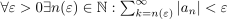
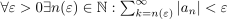
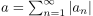
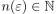
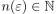
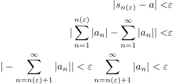
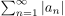
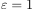
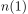
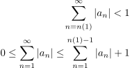

Kriterium für die Absolute Konvergenz einer Reihe (Cauchy)
1. Satz
Sei  eine Reihe, dann konvergiert die Reihe absolut g.d.w., 
eine Reihe, dann konvergiert die Reihe absolut g.d.w., 
2. Beweis
2.1. absolute konvergenz  obiges kriterium
obiges kriterium
Sei  dannn folgt, dass für  ein  existiert, sodass gilt:
ein  existiert, sodass gilt:

1
2.2. obiges kriterium absolute konvergenz
Wir wissen, dass die Reihe  Monoton ist und Beschränkt: Sei  und  gegeben, dann folgt

2